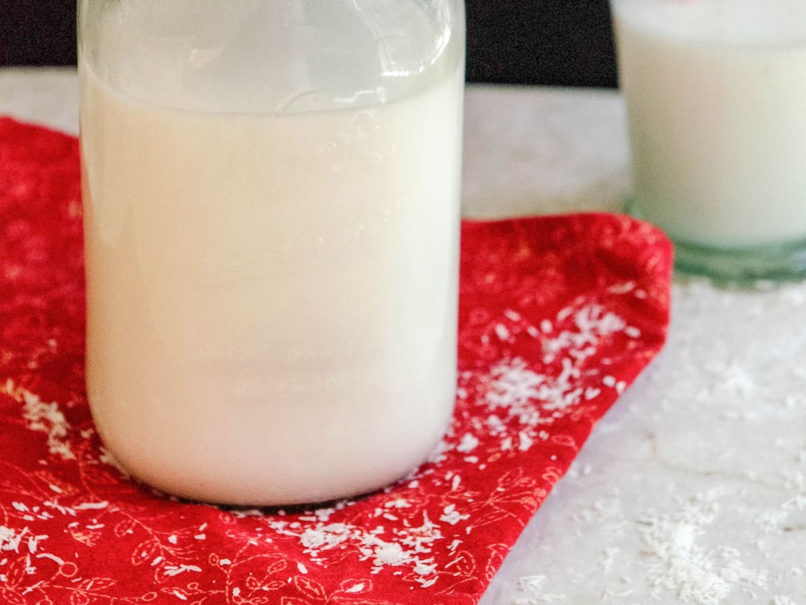

Home
Coconut Milk Recipe

So What Is It?
Coconut milk is a rich, creamy,
opaque white liquid extracted from the grated pulp of matured brown coconuts mixed with water
Ingredients
- 2 cups shredded unsweetened coconut
- 3-4 cups water
- 1 pinch salt
- 1 whole date or 1 Tbsp (15 ml) maple syrup for sweetness
- 1/2 tsp vanilla extract
- 2 Tbsp cocoa or cacao powder for chocolate "milk" or 1/4 cup fresh berries for berry "milk"
How To Make It:
- Add coconut, 3 cups (720 ml) water, salt, and any additional add-ins (optional) to a high-speed blender.
>op with lid and cover with a towel to ensure it doesn’t splash.
Blend for about 2 minutes or until the mixture seems well combined.
- Scoop out a small sample with a spoon to test flavor/sweetness.
Add more dates, salt, or vanilla as needed. Add remaining 1 cup (240 ml) water if too thick.
- Pour the mixture over a large mixing bowl or pitcher covered with a nut milk bag, a very thin towel, or a clean T-shirt. In my experience,
it benefits from a single strain either through a very thin towel or nut milk bag.
You can save pulp for baked goods or to add to oatmeal, smoothies, or energy bites.
- Transfer to a sealed container and refrigerate. Will keep in the refrigerator up to 5 days (sometimes more). Enjoy cold or hot and shake before use, as it can separate in the refrigerator (due to no preservatives!). Can be used in smoothies, with granola, for golden milk, for matcha lattes, or for baked goods.